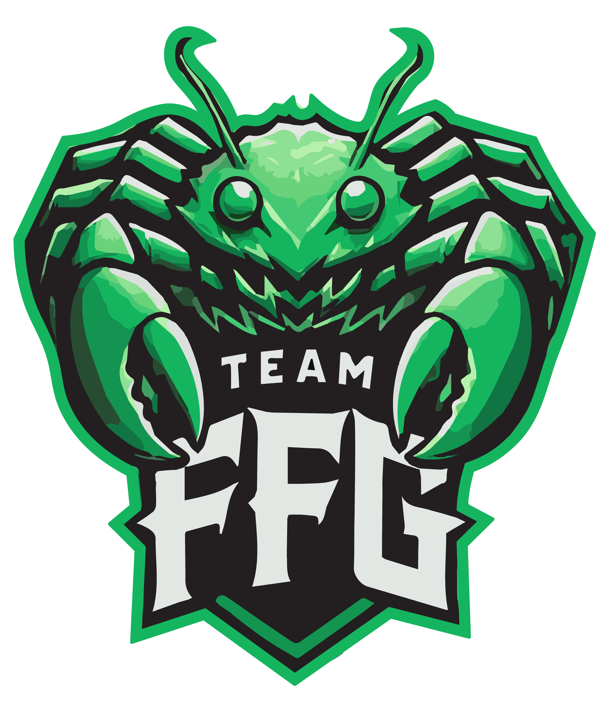

<mat-toolbar color="primary">
    
    <span class="app-title">StackMaker</span>
    <span class="spacer"></span>
    <button mat-button (click)="navigateTo('')">Home</button>
    <button mat-button (click)="navigateTo('donate')">Support Me</button>
    <!-- Add more buttons as needed -->
  </mat-toolbar>
  